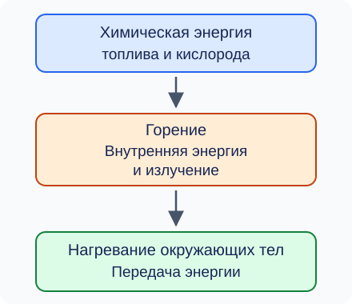

Энергия топлива. Удельная теплота сгорания
Воду можно нагреть электрическим нагревателем или пламенем горелки. В обоих случаях вода получает энергию и её внутренняя энергия увеличивается. Но у горелки есть ещё один участник процесса — топливо. Откуда берётся выделяющаяся при его сгорании энергия и как её рассчитать?
Что происходит при горении
Топливо — вещество, при сгорании которого выделяется энергия, используемая человеком. К топливу относятся, например, древесина, уголь, природный газ и бензин.
Обычное горение топлива — химическая реакция с кислородом. Исходные вещества превращаются в новые: например, при полном сгорании углерода образуется углекислый газ. Для горения нужны топливо, доступ кислорода и условия для начала реакции, в частности достаточное нагревание.
Энергию, связанную с химическим составом и строением веществ, называют химической энергией. При горении уменьшается химическая энергия системы «топливо и кислород». Часть этой энергии увеличивает внутреннюю энергию продуктов сгорания и окружающих тел, часть передаётся излучением, в том числе видимым светом. Поэтому пламя нагревает и освещает окружающие предметы. Энергия возникает не из ничего: происходит её превращение и передача.
Неверно объяснять выделение энергии только «разрушением связей в топливе». На разрушение прежних химических связей энергия затрачивается, а при образовании новых связей энергия выделяется. При горении выделившаяся энергия больше затраченной; их разность и передаётся окружающим телам.

Удельная теплота сгорания
Одинаковые массы разных видов топлива при полном сгорании могут выделять разное количество энергии. Для их сравнения используют удельную теплоту сгорания.
Например, запись \(q=27\ \text{МДж/кг}\) означает: при полном сгорании 1 кг данного топлива выделяется 27 МДж энергии. Для половины килограмма того же топлива при тех же условиях получится вдвое меньше энергии.
Полное сгорание означает, что горючие составляющие топлива прореагировали полностью: не осталось несгоревшего топлива и продуктов неполного сгорания, способных дальше окисляться с выделением энергии. Сам по себе конец видимого пламени ещё не доказывает полноту сгорания. При недостатке кислорода могут образоваться сажа и угарный газ; энергия, выделившаяся из той же исходной массы топлива, окажется меньше расчётной для полного сгорания.
В учебных задачах \(q\) считают постоянной характеристикой выбранного топлива и условий расчёта. Реальные древесина, уголь и другие виды топлива различаются по составу и влажности. На результат влияет и то, в каком состоянии учитывают продукты сгорания. Поэтому значение \(q\) из условия задачи нужно использовать именно для описанной в ней модели топлива, а не считать точным универсальным числом для любого образца с тем же названием. Числа в примерах ниже заданы как округлённые учебные значения.
Как рассчитать энергию топлива
Проверка единиц:
Из той же зависимости можно найти массу топлива и удельную теплоту сгорания:
В этой теме \(Q\) записываем как положительную величину выделившейся энергии. Формула \(Q=qm\) описывает полное сгорание указанной массы топлива при принятом значении \(q\). Если часть топлива не сгорела, нельзя подставлять всю первоначальную массу как массу полностью сгоревшего топлива.
Пример 1. Сколько энергии выделится
Условие и решение
Полностью сгорело 200 г топлива с удельной теплотой сгорания \(27\ \text{МДж/кг}\). Найдём выделившееся количество теплоты.
Переведём массу в килограммы:
Тогда:
При полном сгорании указанной массы топлива выделится 5,4 МДж энергии.
Пример 2. Какая масса топлива нужна
Условие и решение
Какую массу топлива с \(q=30\ \text{МДж/кг}\) нужно полностью сжечь, чтобы выделилось 9 МДж энергии?
Нужно полностью сжечь 300 г топлива.
Что нужно запомнить
При горении химическая энергия системы «топливо и кислород» превращается в другие формы энергии и передаётся окружающим телам. Удельная теплота сгорания \(q\) показывает энергию полного сгорания 1 кг топлива. Для массы \(m\) выделившуюся энергию находят по формуле \(Q=qm\).
Вопросы для самопроверки
1. Какие превращения энергии происходят при горении топлива? 2. Почему объяснение «энергия выделилась из-за разрыва связей» неполно и неверно без учёта образования новых связей? 3. Что означает запись \(q=20\ \text{МДж/кг}\)? Что изменится при сгорании вдвое большей массы того же топлива? 4. Чем полное сгорание отличается от неполного? Почему для полного сгорания важен доступ кислорода? 5. Почему при неполном сгорании нельзя рассчитывать выделившуюся энергию по всей исходной массе топлива как при полном сгорании? 6. Как найти массу топлива, если известны выделившееся количество теплоты и удельная теплота сгорания? 7. Почему перед вычислениями нужно согласовать единицы массы и энергии?
Задачи для самостоятельной работы
Во всех задачах топливо сгорает полностью. Приведённые значения удельной теплоты сгорания — заданные округлённые значения для учебных моделей топлива. Записывай формулу, перевод единиц и вычисление с единицами измерения.
- Топливо имеет удельную теплоту сгорания \(15\ \text{МДж/кг}\). Сколько энергии выделится при сгорании 400 г этого топлива? Вырази результат в МДж и Дж.
- Какую массу топлива с \(q=24\ \text{МДж/кг}\) нужно сжечь для выделения 7,2 МДж энергии?
- При полном сгорании 150 г топлива выделилось 4,5 МДж энергии. Определи его удельную теплоту сгорания в МДж/кг и Дж/кг.
- Сравни энергию сгорания 300 г первого топлива с \(q_1=20\ \text{МДж/кг}\) и 200 г второго с \(q_2=32\ \text{МДж/кг}\). Какое количество энергии больше и на сколько?
- Для получения одинакового количества теплоты используют два вида топлива: с удельной теплотой сгорания \(18\ \text{МДж/кг}\) и \(36\ \text{МДж/кг}\). Первого топлива сгорело 600 г. Какую массу второго топлива нужно полностью сжечь?